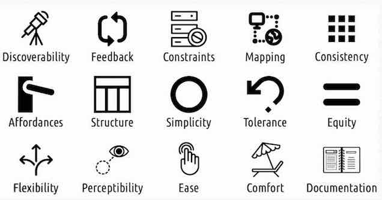
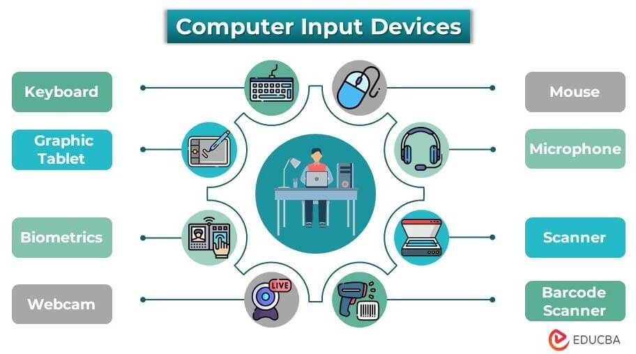
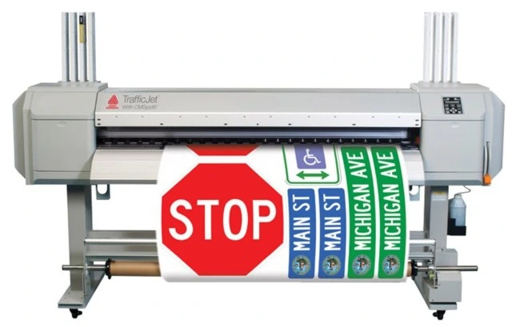
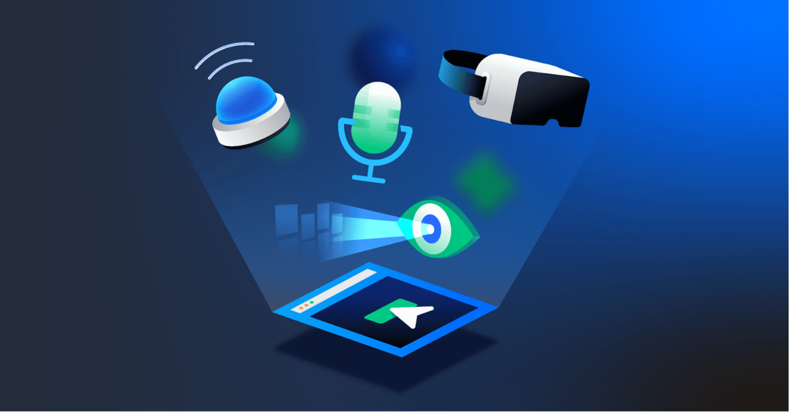

Welcome to the HCI Course Topics Website
This website contains links to key topics related to Human-Computer Interaction (HCI), including design principles, input and output devices, and emerging interface technologies. Use the navigation menu to explore each topic and access useful resources that will deepen your understanding of HCI concepts.
Design Principles for HCI
Design principles in HCI focus on creating interfaces that are intuitive, efficient, and user-friendly. Key concepts include consistency, feedback, error prevention, and user control. These principles ensure that users have a seamless and productive experience.
- Nielsen Norman Group: Ten Usability Heuristics - This site provides a comprehensive overview of usability heuristics, which are essential design principles in HCI (Nielsen, 1995).
- Smashing Magazine: Principles of HCI - An article that explains fundamental HCI principles and how they apply to user interface design (Smashing Magazine, 2018).
References:
Nielsen, J. (1995). Ten Usability Heuristics. Retrieved from https://www.nngroup.com/articles/ten-usability-heuristics/
Smashing Magazine. (2018). Principles of Human-Computer Interaction. Retrieved from https://www.smashingmagazine.com/2018/08/principles-human-computer-interaction/
Specialized Input Devices and Their Applications
Specialized input devices improve accessibility and efficiency for users. Examples include eye-tracking systems for individuals with disabilities, haptic controllers for immersive experiences, and gesture recognition devices used in virtual environments.
- Techopedia: Specialized Input Devices - This article explains various specialized input devices and their applications (Techopedia, 2020).
- How-To Geek: The Best Specialized Input Devices - A guide to understanding and selecting specialized input devices for different needs (How-To Geek, 2020).
References:
Techopedia. (2020). Specialized Input Device. Retrieved from https://www.techopedia.com/definition/24243/specialized-input-device
How-To Geek. (2020). The Best Specialized Input Devices. Retrieved from https://www.howtogeek.com/682143/the-best-specialized-input-devices/
Specialized Output Devices and Their Applications
Specialized output devices enhance user interaction by providing feedback through various forms. 3D printers create physical models from digital designs, while VR headsets deliver immersive experiences. These technologies are used in fields such as medicine, education, and entertainment.
- Explain That Stuff: Output Devices - A resource explaining different types of output devices and their uses (Explain That Stuff, 2021).
- Live Science: Amazing Output Devices - An article showcasing groundbreaking output technologies (Live Science, 2021).
References:
Explain That Stuff. (2021). Output Devices. Retrieved from https://www.explainthatstuff.com/output-devices.html
Live Science. (2021). 10 Amazing Output Devices. Retrieved from https://www.livescience.com/10-amazing-output-devices.html
Emerging Interface Concepts and Technologies
Emerging interface technologies like augmented reality (AR), brain-computer interfaces (BCI), and voice-based systems are revolutionizing how we interact with machines. These technologies aim to create more natural and intuitive user experiences.
- Wired: The Future of Human-Computer Interaction - A look into how emerging technologies will change HCI (Wired, 2022).
- Forbes: Technologies Driving the Future of Interfaces - Insights on the latest interface concepts and their impact (Forbes, 2022).
References:
Wired. (2022). The Future of Human-Computer Interaction. Retrieved from https://www.wired.com/story/future-human-computer-interaction/
Forbes. (2022). Technologies Driving the Future of Interfaces. Retrieved from https://www.forbes.com/sites/forbestechcouncil/2022/03/16/technologies-driving-the-future-of-interfaces/